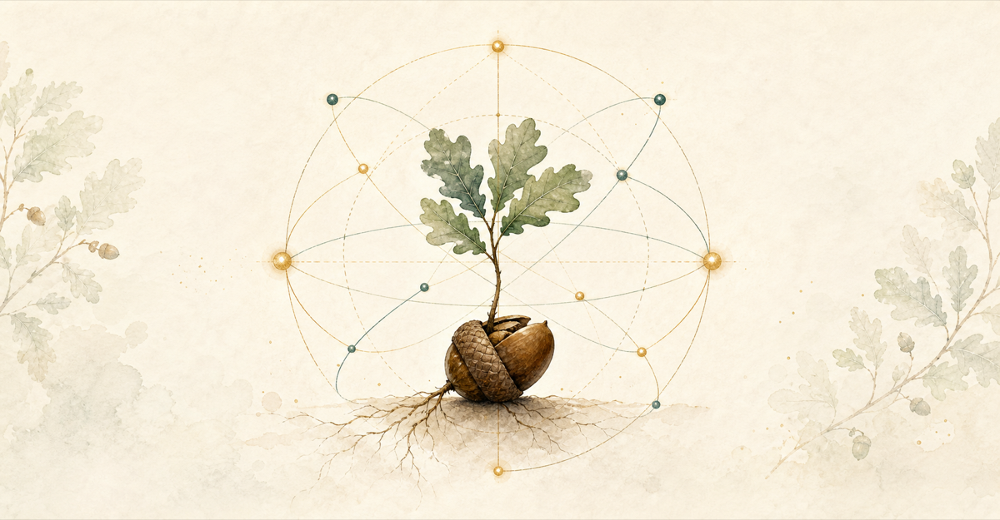

STOC 2026 Workshop
Random Purification Channel
A workshop during STOC 2026 on random purification, quantum symmetries, tomography, and related topics.

About
This workshop will bring together researchers working on random purification, quantum symmetries, tomography, and adjacent areas of quantum information and theory.
Schedule
Alpine Ballroom A
June 22
8:30-9:30
John Wright
The random purification channel
The random purification channel is a recently introduced tool in quantum information which converts copies of a mixed quantum state to copies of a corresponding pure state. This gives a principled way of taking problems about mixed states (which have traditionally been viewed as hard) and converting them to problems about pure states (which tend to be easy). Since its introduction, the random purification channel has been used to settle the complexity of a variety of problems in areas such as quantum state learning and metrology, quantum channel learning, and quantum query complexity.
This talk will serve as a tutorial on the random purification channel. We will first discuss what purifications are and define the channel. We will then discuss two methods for constructing the channel. Finally, we will discuss the history of the random purification channel. This talk will only require fairly basic knowledge of quantum information such as pure states and mixed states.
9:30-10:30
Jack Spilecki
Quantum state tomography via the random purification channel
Quantum state tomography is the task of learning an unknown quantum state from measurements on copies of that state. While tomography of pure states is well understood, tomography of mixed states has long been considered substantially harder, both conceptually and technically.
In this talk, I will describe a new approach showing how mixed-state tomography reduces to pure-state tomography. The key tool is the recently discovered random purification channel, which converts copies of an unknown mixed state into copies of a random purification on a larger Hilbert space. We can then apply a pure-state tomography algorithm to learn this purification and recover the original mixed state.
This simple strategy yields the first tomography algorithm which is sample-optimal in all standard parameters: the Hilbert space dimension \(d\), the rank \(r\), the error \(\varepsilon\), and the success probability \(1-\delta\). It also gives the first algorithm which is simultaneously sample-optimal and gate-efficient. More broadly, a small adjustment to this framework recovers essentially all existing results on mixed-state tomography, including settings with limited entanglement, classical shadows, and applications to quantum metrology. We also apply our new mixed state algorithms to spectrum learning, and show for the first time that for sufficiently large \(\varepsilon\), one is able to learn the spectrum of an unknown state with fewer samples than it takes to learn the state itself.
Based on joint work with Angelos Pelecanos, Ewin Tang, and John Wright.
June 23
8:45-9:45
Marco Fanizza
Random Stinespring superchannel: converting channel queries into dilation isometry queries
The "Church of the Larger Hilbert Space" provides one of the most fruitful paradigms in quantum information theory, as exemplified by the random purification channel. In this spirit, just as states admit purifications, channels admit isometric dilations. Is it then possible to obtain a random dilation protocol for channels? In this talk, I will answer this question in the affirmative. After a brief introduction to quantum channels and their transformations, I will provide both an existence proof and an explicit, efficient circuit construction. Finally, I will discuss the consequences for channel learning and present a channel-level analogue of Uhlmann's theorem for quantum divergences, generalizing the classic characterization of fidelity as the supremum over the fidelity of purifications.
9:45-10:45
Kean Chen
Quantum channel tomography: optimal bounds and a Heisenberg-to-classical phase transition
How many black-box queries to a quantum channel are needed to learn its full classical description? This question lies at the heart of quantum channel tomography (also known as quantum process tomography), a fundamental task in the characterization and validation of quantum hardware. In this talk, we consider tomography of an unknown quantum channel with input dimension \(d_1\), output dimension \(d_2\), and Kraus rank at most \(r\), to within error \(\varepsilon\). We identify the dilation rate \(\tau = r d_2 / d_1\) as a key parameter, and establish that the optimal query complexity of channel tomography exhibits distinct scaling laws across three regimes of \(\tau\).
- In the boundary regime (\(\tau = 1\)): we show that the query complexity is \(\Theta(r d_1 d_2/\varepsilon)\) for Choi trace norm error \(\varepsilon\), and is upper bounded by \(O(\min\{r d_1^{1.5} d_2/\varepsilon, r d_1 d_2/\varepsilon^2\})\) and lower bounded by \(\Omega(r d_1 d_2/\varepsilon)\) for diamond norm error \(\varepsilon\).
- In the away-from-boundary regime (\(\tau \geq 1+\Omega(1)\)): we show that the query complexity is \(\Theta(r d_1 d_2/\varepsilon^2)\) for both Choi trace norm and diamond norm errors \(\varepsilon\).
Our results uncover a sharp Heisenberg-to-classical phase transition in the query complexity of quantum channel tomography: at \(\tau=1\), the optimal query complexity exhibits Heisenberg scaling \(1/\varepsilon\), whereas for \(\tau\geq 1+\Omega(1)\), it exhibits classical scaling \(1/\varepsilon^2\). In addition, we show that in the near-boundary regime (\(1< \tau < 1+o(1)\)), the query complexity exhibits a mixture of Heisenberg and classical scaling behaviors.
June 24
8:45-9:45
Senrui Chen
Towards sample-optimal learning of bosonic Gaussian quantum states
Bosonic quantum systems enable key quantum technologies in computation, communication, and sensing. Bosonic Gaussian states, which can be viewed as quantum analogues of classical Gaussian distributions, emerge naturally in many applications, including gravitational-wave and dark-matter detection. In this talk, I will discuss the problem of learning an n-mode bosonic Gaussian state using as few samples as possible. I will first give a pedagogical introduction to bosonic quantum information, and then introduce several recent sample-complexity results on bosonic Gaussian state learning. I will explain the connection to and distinction from learning classical Gaussians, and explore the roles of different quantum resources in achieving optimal sample complexity. In particular, I will explain how a Random Purification Channel tailored to bosonic Gaussian states leads to sample-optimal learning.
9:45-10:45
Eli Goldin
Less is More: On Copy Complexity in Quantum Cryptography
Quantum cryptographic definitions are often sensitive to the number of copies of the cryptographic states revealed to an adversary. Making definitional changes to the number of copies accessible to an adversary can drastically affect various aspects including the computational hardness, feasibility, and applicability of the resulting cryptographic scheme. This phenomenon appears in many places in quantum cryptography, including quantum pseudorandomness and unclonable cryptography. To address this, we present a generic approach to boost single-copy security to multi-copy security and apply this approach to many settings. As a consequence, we obtain the following new results:
- One-copy stretch pseudorandom state generators (under mild assumptions) imply the existence of \(t\)-copy stretch pseudorandom state generators, for any fixed polynomial \(t\).
- One-query pseudorandom unitaries with short keys (under mild assumptions) imply the existence of \(t\)-query pseudorandom unitaries with short keys, for any fixed polynomial \(t\).
- Assuming indistinguishability obfuscation and other standard cryptographic assumptions, there exist identical-copy secure unclonable primitives such as public-key quantum money and quantum copy-protection.
Organizers
Angelos Pelecanos
Jack Spilecki
Ewin Tang
John Wright